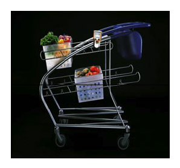

|
http://www.paacf.org/ June 22 – September 10, 2006 PUBLIC RECEPTION - June 22, 2006, 6:00-8:30 pm PALO ALTO, Calif. – June 1, 2006 – The Palo Alto Art Center (PAAC) explores ground-breaking approaches to innovative design by IDEO, a Palo Alto-based design firm, in IDEO Prototypes the Future, June 22 through September 10, 2006. This is the very first exhibition to present a comprehensive collection of contemporary, forward-thinking concepts and prototypes created by the internationally-recognized leader in human-centered design. This compelling exhibition builds awareness about the design process at IDEO that expanded the terrain of design of physical objects to services, spaces, interactions and businesses. IDEO Prototypes the Future is presented with a second exhibition, Creative Commerce: German Lithographic Labels, 1920-1938, that profiles an unparalleled time in commercial printing through exquisitely printed produce labels by the Paul I. Landmann, Germany, 1920-1938, for industries near Mannheim, Germany. IDEO Prototypes the Future is also presented in conjunction with ISEA (International Symposia of Electronic Art) Symposium, August 7 - 13, 2006 in San Jose. IDEO PROTOTYPES THE FUTURE IDEO is a company heralded for design and innovation strategies for a global clientele in dozens of industries. Headquartered in Palo Alto, with offices worldwide, IDEO is arguably the leading voice in user-centered design methodology today. The world’s fascination with IDEO’s approach to innovation happened in 1999 when ABC’s Nightline with Ted Koppel dedicated an entire episode to the firm’s methods, following a multidisciplinary team as they redesigned the ubiquitous shopping cart in less than five days. The past seven years have produced countless articles, white papers and books, some by IDEO staff themselves, examining the question, “How does IDEO do it?” The answer lies, in part, in its approach to gathering insight about people’s needs, desires and behaviors, as well as the creativity of its multidisciplinary teams and its iterative prototyping process. The exhibition showcases the prototype of the shopping cart. Other highlights include Identity Cards, a series of business cards that explore and express possible future social systems; Crave Aid, an engaging and light-hearted conceptual piece that comments on the dangerous habit of consuming unhealthy food; Social Mobiles, a whimsical exploration into mobile phone behavior designed to provoke discussion about the social impact of cellphones; Steelcase Q Concept, Collection of the San Francisco Museum of Modern Art, a mobile workspace that is driven like a car; and the Ha-Ori Shelter, an elegant, origami-like yurt by Joerg Student that is twelve and a half feet high and folds into a flat piece for transport. An additional section of the exhibition demonstrates through different real project examples various approaches to prototyping, as well as the tools and methods required for making prototyping a regular and productive activity in any organization. The public is also invited to respond to the exhibition through their own experimentation with materials provided in the exhibition’s Invent-a-corner. |